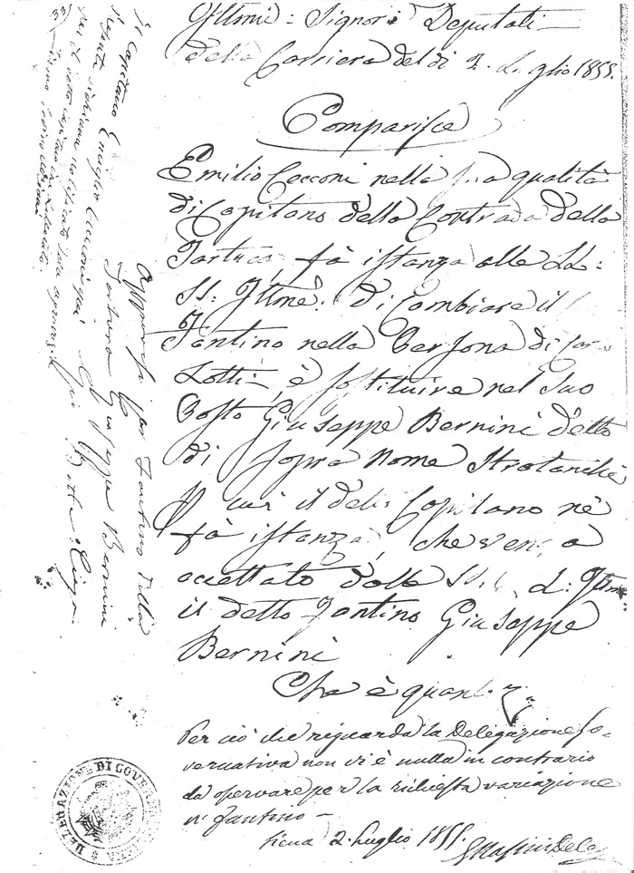

|
(Zurlino) 0/8 Nato a Vignano (SI) il 13 novembre 1835 (vedi battesimo) Morto a Siena il 10 novembre 1888 
1 Palio straordinario.   
23 Maggio 1853 - Festa di San Bernardino Corsa di cavalli con fantino fuori porta Camollia. Vince il cavallo del barbiere Michele Guglielmi con il fantino Lotti. |